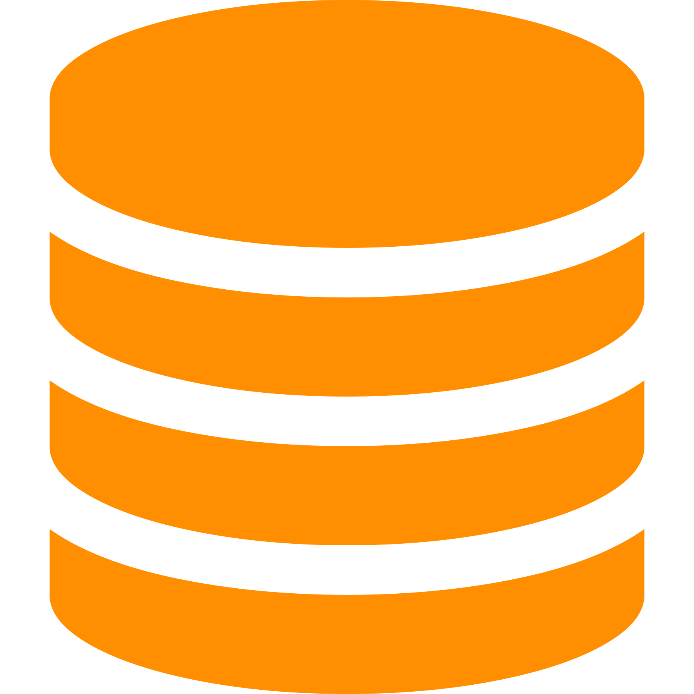
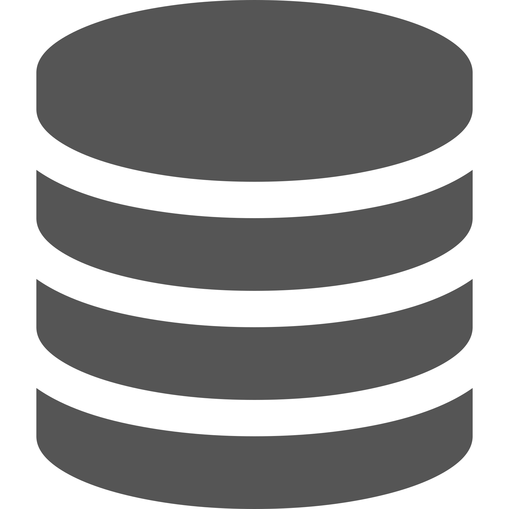

This is the multi-page printable view of this section.
Click here to print.
Return to the regular view of this page.
Application Programming Interfaces (API)
Stroom’ public REST APIs for querying and interacting with all aspects of Stroom.
Stroom has many public REST APIs to allow other systems to interact with Stroom.
Everything that can be done via the user interface can also be done using the API.
Swagger
The APIs are available as a Swagger Open API specification in the following forms:
A dynamic
Swagger user interface
is also available for viewing the API endpoints.
Authentication
In order to use the API endpoints you will need to authenticate.
Authentication is achieved using an
API Key
.
You will either need to create an API key for your personal Stroom user account or for a shared processing user account.
Whichever user account you use it will need to have the necessary permissions for each API endpoint it is to be used with.
To create an API key for a user:
- From the top menu, select:
- Click Create.
- Enter a suitable expiration date.
Short expiry periods are more secure in case the key is compromised.
- Select the user account that you are creating the key for.
- Click OK.
- Select the newly created API Key from the list of keys and double click it to open it.
- Click Copy key to copy the key to the clipboard.
To make an authenticated API call using curl do the following:
Handling JSON
jq
is a utility for processing JSON and is very useful when using the API methods.
For example to get just the build version from the node info endpoint:
1 - Query APIs
The APIs to allow other systems to query the data held in Stroom.
The Query APIs use common request/response models and end points for querying each type of data source held in Stroom.
The request/response models are defined in
stroom-query
.
Currently Stroom exposes a set of query endpoints for the following data source types.
Each data source type will have its own endpoint due to differences in the way the data is queried and the restrictions imposed on the query terms.
However they all share the same API definition.
-

stroom-index Queries
-
The Lucene based search indexes.
-
 Sql Statistics Query
-
Stroom’s SQL Statistics store.
Sql Statistics Query
-
Stroom’s SQL Statistics store.
-

Searchable
-
Searchables are various data sources that allow you to search the internals of Stroom, e.g. local reference data store, annotations, processor tasks, etc.
The detailed documentation for the request/responses is contained in the Swagger definition linked to above.
Common endpoints
The standard query endpoints are
Datasource
The
Data Source
endpoint is used to query Stroom for the details of a data source with a given
DocRef
.
The details will include such things as the fields available and any restrictions on querying the data.
Search
The search endpoint is used to initiate a search against a data source or to request more data for an active search.
A search request can be made using iterative mode, where it will perform the search and then only return the data it has immediately available.
Subsequent requests for the same queryKey will also return the data immediately available, expecting that more results will have been found by the query.
Requesting a search in non-iterative mode will result in the response being returned when the query has completed and all known results have been found.
The SearchRequest model is fairly complicated and contains not only the query terms but also a definition of how the data should be returned.
A single SearchRequest can include multiple ResultRequest sections to return the queried data in multiple ways, e.g. as flat data and in an alternative aggregated form.
Stroom as a query builder
Stroom is able to export the json form of a SearchRequest model from its dashboards.
This makes the dashboard a useful tool for building a query and the table settings to go with it.
You can use the dashboard to defined the data source, define the query terms tree and build a table definition (or definitions) to describe how the data should be returned.
The, clicking the download icon on the query pane of the dashboard will generate the SearchRequest json which can be immediately used with the /search API or modified to suit.
Destroy
This endpoint is used to kill an active query by supplying the queryKey for query in question.
Keep alive
Stroom will only hold search results from completed queries for a certain lenght of time.
It will also terminate running queries that are too old.
In order to prevent queries being aged off you can hit this endpoint to indicate to Stroom that you still have an interest in a particular query by supplying the query key.